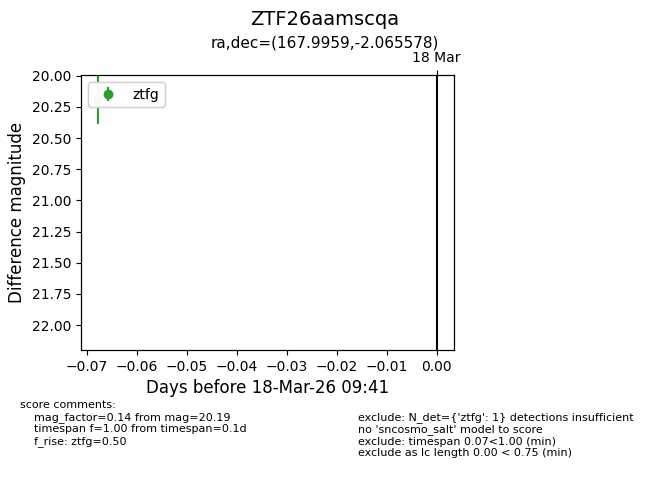
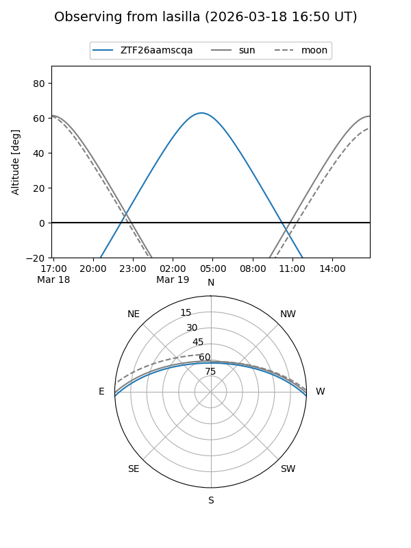
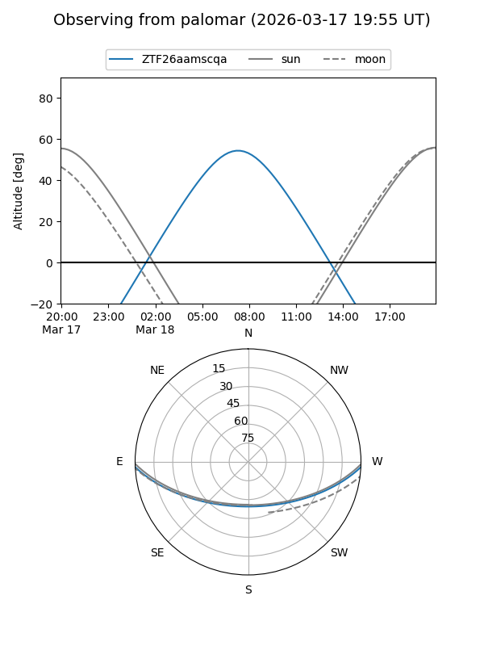

ZTF26aamscqa
Target ZTF26aamscqa at 2026-03-18 09:43
Aliases and brokers:
FINK: link
Lasair: link
ALeRCE: link
alt names
ZTF26aamscqa (ztf,fink_ztf)
Coordinates:
equatorial (ra, dec) = 167.9959,-2.06558
equatorial (HMS+DMS) = 11:11:59.01,-02:03:56.08
galactic (l, b) = (259.6087,+52.23567)
Flags:
Photometry:
last ztfg=20.19
1 ztfg detections
Lightcurve

Visibility


Additional plots